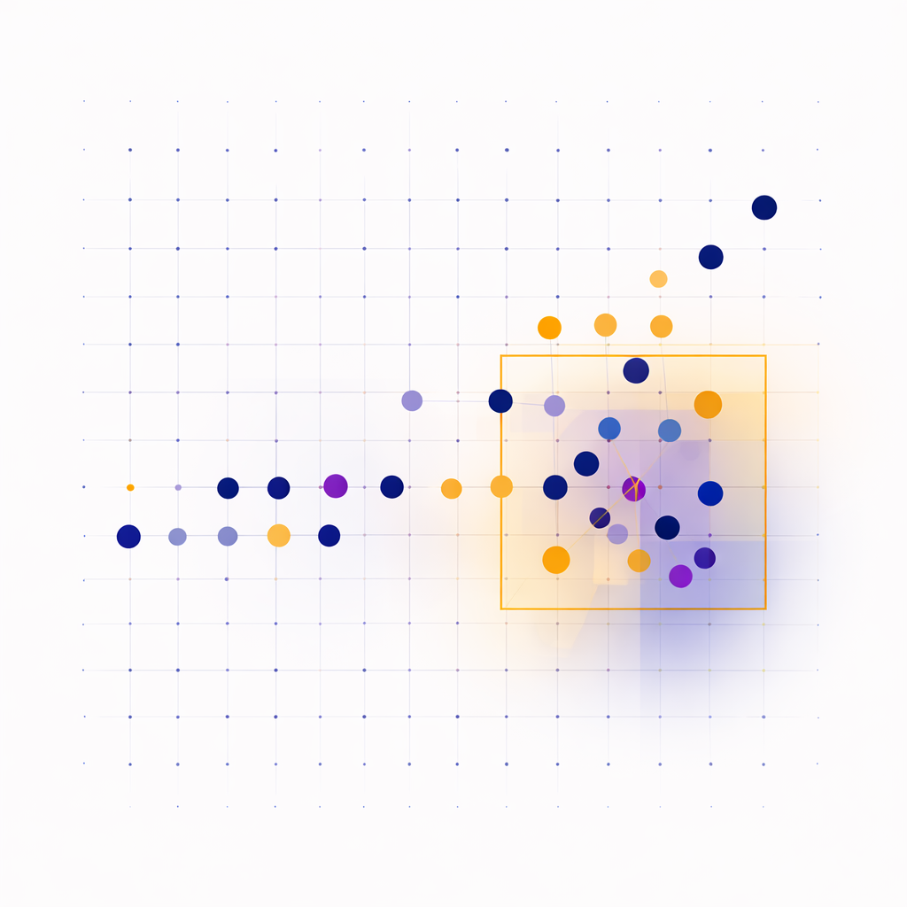

1. Diagnose the opportunity
Start with what is actually happening. Look at analytics, funnel behavior, UX friction, and customer signals so the team is solving the right problem.
Agnostic across B2B, B2C, SaaS, and Commerce
I design and validate experiments that reduce friction, clarify decisions, and improve conversion.
I have led more than 30 experiments across discovery, navigation, decision flows, and cross sell experiences, turning behavioral insight into measurable gains in engagement, progression, and conversion.
Work examples are anonymized to respect confidentiality.

The ideas that shape how I frame experiments, simplify decisions, and measure impact.

Start with how people actually make decisions in the moment. Look for friction, hesitation, and the signals that tell you where momentum breaks.
Make choices easier to understand. Simplify options, improve framing, and guide people toward confident action.
Validate ideas with discipline. Use clear hypotheses, meaningful guardrails, and outcomes tied to real movement in the funnel.
A practical approach I use to shape, prioritize, and validate experiments so decisions are tied to meaningful outcomes.
Start with what is actually happening. Look at analytics, funnel behavior, UX friction, and customer signals so the team is solving the right problem.
Turn an idea into a clear hypothesis tied to behavior. Define what changes, who it is for, and what success looks like before execution begins.
Use the right validation method for the traffic, risk, and timeline. That may be an A B test, a staged rollout, or a more directional learning plan with defined guardrails.
I work closely with design teams to validate ideas before they launch. That means testing variations, measuring downstream impact, and identifying what should scale versus what should keep evolving.
A selection of experiments showing how behavioral insight and structured testing translate into measurable movement across the funnel.
Test Concept: Countdown messaging placed at a high-intent moment.
Scenario: The team needed a simple way to communicate a limited-time offer without adding clutter or creating friction later in the funnel.
Hypothesis: If a clear countdown is placed near the primary CTA and paired with tighter urgency messaging, engagement will increase while downstream performance remains stable or improves.
My Role: I designed the countdown pattern itself, built the test plan, aligned success metrics and guardrails, and partnered with development to bring the experience to life. I also monitored performance throughout the test to support rollout decisions.
Outcome: Countdown messaging consistently increased engagement across placements. In one of the strongest urgency tests, click-through rate increased by 30.88%, validating urgency as a reliable attention and action driver at high-intent moments. The pattern proved especially effective for increasing interaction with promotional messaging and became a strong repeatable lever for future offer communication.
Test Concept: Contextual product recommendation within a device discovery experience.
Scenario: Users browsing devices were not always seeing relevant companion products early enough in the journey, limiting discovery and cross-sell engagement.
Hypothesis: If a more relevant companion product is surfaced in the discovery flow based on ecosystem context, engagement will improve without disrupting the primary browse goal.
My Role: I identified the opportunity, created the targeted audience strategy for the use case, mapped the placement to the right stage of the funnel, and aligned measurement to evaluate both engagement and downstream progression.
Outcome: Context-aligned placement increased engagement by 28.95% and created stronger downstream movement into cart starts and checkouts. The test validated contextual merchandising as an effective discovery lever and showed that surfacing the right companion product earlier in the journey can improve product consideration without disrupting the primary browse experience.
Test Concept: Navigation and wayfinding improvements at key decision points.
Scenario: Users were not finding high-value pages quickly, which created drop-off, backtracking, and missed opportunities to move into the next best step.
Hypothesis: If clearer navigation elements with more purposeful labels are introduced, more users will reach key pages and show stronger downstream progression.
My Role: Using behavioral data, I identified the strongest pages to feature in the wayfinding pattern, defined the success metrics across exploration and downstream movement, and made sure the results were interpreted as true navigational improvement rather than inflated performance language.
Outcome: Adding clearer wayfinding increased visits to key pages by 10.98% at 99% confidence, confirming that stronger navigation improved exploration and reduced friction at important decision points. The test validated wayfinding as a meaningful tool for helping users reach high-value content more efficiently.
Test Concept: Offer and plan messaging at the moment of decision.
Scenario: Users hesitated when comparing options because the value proposition and recommended path were not immediately clear.
Hypothesis: If the messaging is simplified and the most relevant path is made easier to understand, hesitation will drop and progression to the next step will improve.
My Role: I shaped the hypothesis, created the targeted audience strategy based on the options shown on the page, aligned stakeholders around success criteria, and translated the business question into measurable behavior that could be validated through testing.
Outcome: Highlighting the plan required to unlock the best offer significantly increased conversion rate, confirming that unclear plan guidance was a meaningful friction point in the decision process. The test showed that clearer decision framing can directly improve conversion when users are comparing competing options.
In addition to the featured examples above, I have led and supported experiments across a wider set of themes that shaped merchandising strategy, product education, behavioral nudges, and decision architecture across the journey.
Messaging and Offer Framing
Tests focused on promotional framing, CTA language, value articulation, and message clarity to increase engagement without weakening conversion quality.
Pricing Clarity and Plan Communication
Work aimed at making pricing and plan structure easier to understand through ribbons, framing, plan explanations, and simpler value communication at decision points.
Trust Signals and Informational Framing
Experiments involving reviews, compatibility reminders, product education, and support content that helped users feel more confident progressing.
Contextual Personalization
Tests that aligned merchandising, messaging, and promotional relevance to user context, device type, behavioral signals, or audience attributes.
Email: desiree.kurkowski@gmail.com
LinkedIn: View LinkedIn Profile